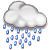

<dom-module id="mario-forecast">
	<style>
		:host{
			margin: 0 auto;
			margin-top: 25px;
			width: 90%;
			height: 90%;
			overflow-y: scroll;
			overflow-x: hidden;
			background: rgba(0,0,0,0.5);
			border: solid 1px black;
			box-shadow: 1px 2px 3px rgba(0,0,0,0.5);
			display: block;
			position: absolute;
		}
	</style>
	<template>
		<template is="dom-repeat" items="{{list}}">
			<div class="day">
				
				<span class="description">{{item.description}}</span>
				<span class="date">{{item.date}}</span>
				<span class="humidity">{{item.humidity}}</span>
				<span class="temp_min">{{item.temp_min}}</span>
				
				<span class="temp_max">{{item.temp_max}}</span>
				
			</div>
		</template>
	</template>
</dom-module>
<script>
	Polymer({
		is: 'mario-forecast',
		properties:{
			list: new Array()
		},
		ready :function(){

		}
	});
</script>